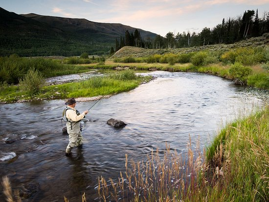
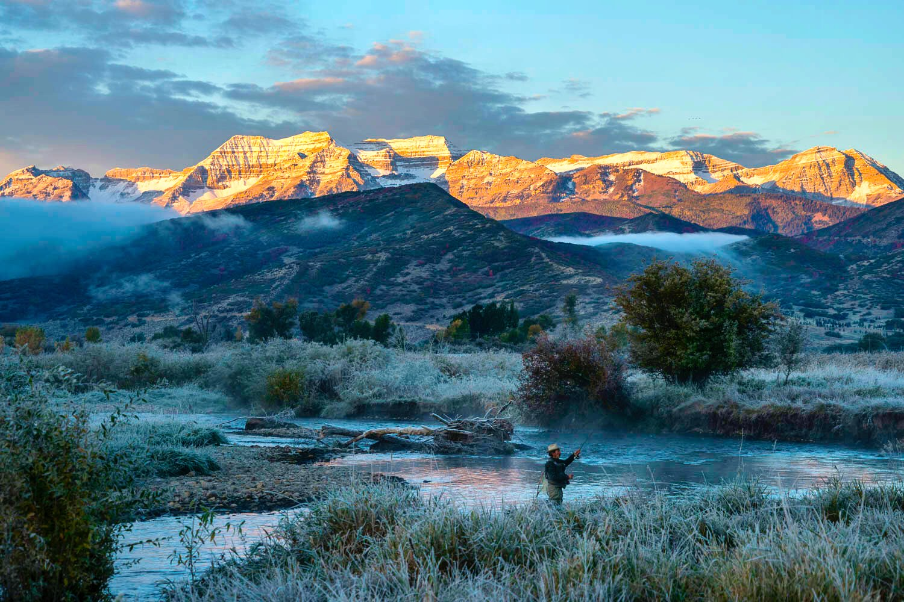
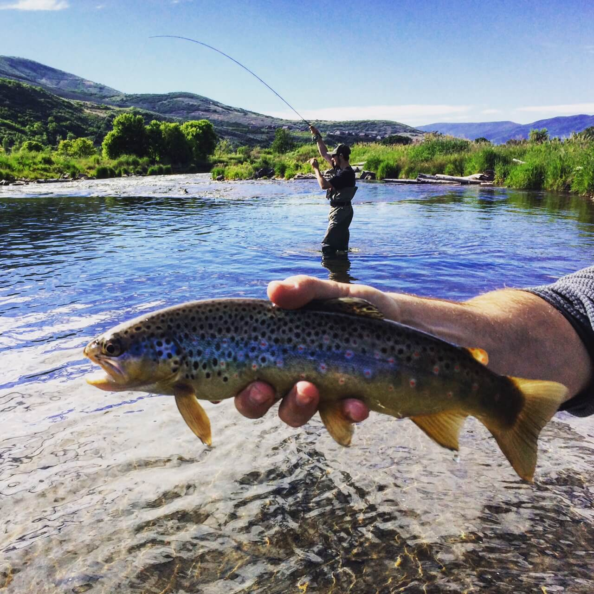

Fly Fishing is the Best!!
 The Provo River, flowing through the stunning Wasatch Mountains in Utah, is a hidden gem for fly fishermen. Known for its crystal-clear waters, the river meanders through picturesque landscapes, offering a breathtaking backdrop of towering peaks, lush forests, and vibrant wildflowers. The scenery changes with the seasons, from the lush green hues of spring and summer to the golden aspens and snow-dusted mountains in the winter. Its accessibility, combined with the tranquility of the area, makes it a popular destination for anglers who appreciate not only great fishing but also the peacefulness of nature.

The Mighty Trout
What truly sets the Provo River apart, however, is the quality of its fishing. The river is home to a rich variety of trout species, including rainbow, brown, and cutthroat trout. The diverse habitats within the river provide perfect conditions for these fish to thrive, with its cold, oxygenated waters and abundant insect life creating an ideal environment. Brown trout, in particular, are abundant, with many reaching impressive sizes due to the river’s stable water conditions and ample food supply. For anglers seeking a challenge, the opportunity to catch a trophy-sized brown trout is one of the river’s major draws.
A River full of Oppurtunities
The Provo River also offers fantastic fishing opportunities year-round, with the spring and fall months being particularly productive. During these seasons, aquatic insects like caddis, mayflies, and stoneflies hatch, drawing the fish to the surface and providing excellent dry fly fishing opportunities. Summer months bring the chance for nymphing with more consistent water flows, while winter offers a quieter, more serene experience with the opportunity to fish in peaceful solitude. Each season presents unique challenges and rewards, ensuring that anglers of all skill levels can find something exciting no matter when they visit.Take a Deep Breath
What truly enhances the experience of fishing on the Provo River is its natural beauty. Whether you're casting your line under the shade of cottonwood trees, watching a bald eagle soar above, or taking in the view of the river winding through the valley, the river is as much about the atmosphere as it is about the fishing. The well-maintained access points make it easy to enjoy both the fishing and the scenery, and many spots along the river provide a sense of seclusion. For anglers looking for an unforgettable day of fly fishing amidst unparalleled beauty, the Provo River offers an experience that is hard to match.- Rainbow Trout
- Easiest to Catch
- Most Active in the Mornings
- Brightly Colored and Found in Shallow Waters
- Brown Trout
- Hardest to Catch
- Most Active Early in the Morning
- Known for Their Cunning and Preference for Deeper Waters
- Cutthroat Trout
- Best Fighting Fish
- Most Active in the Afternoon
- Distinctive Red Markings on the Underside of the Jaw